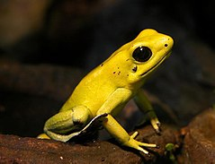
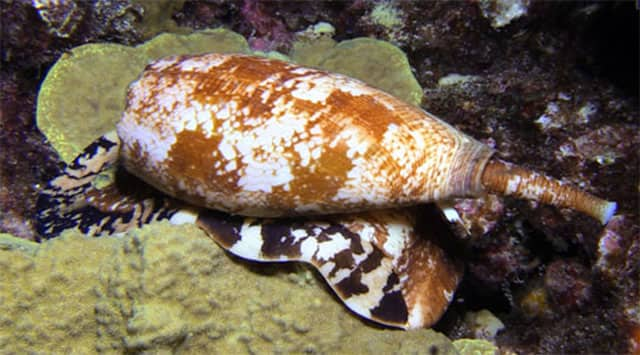
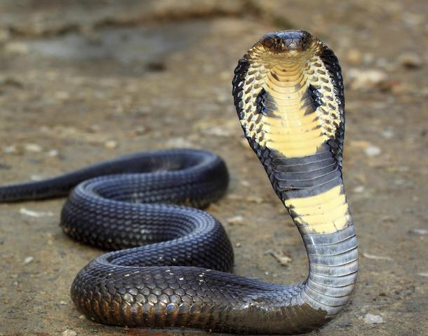
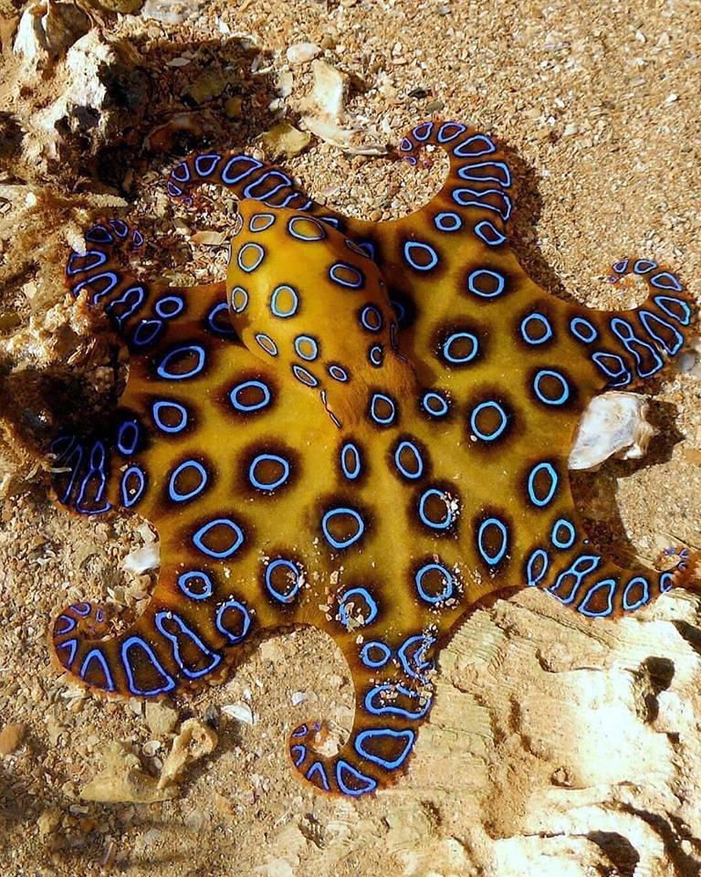
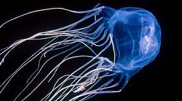

Rana dardo dorada
Esta rana de apenas 10 cm con suletal veneno puede matar a 10 personas en menos de una hora, esta habita en las selvas de américa principalmente centroamérica y sudamérica, esta transmite su veneno con tan solo tocarla y estan letal que casi no se tiene antídoto de esta y además de ser la rana mas peligtrosa lo que la hace identificable es su color dorado brillante.
Caracol cigarrillo o cono
Este habita en aguas profundas del oceano principalmente en arrecifes de coral, pero es extremadamente peligroso ya que por su color es confundido con arena o piedras marinas, este transmiter su veneno por medio de un aguijón que tiene detras del caparazón y es tan letal que por si su nombre viene de eso ya que su veneno puede acabar con tu vida en lo que se tardaria en fumar un cigarrilo que es aproximadamente unos 6 minutos.
Cobra real
Esta es quizá la serpiente mas venenosa del mundo ya que es tan mortífera que puede matar a una persona sana en menos de 5 minutuos, y si en caso de que sobrevivieras las consecuencias son graves ya que hay casos en el que el afectado a quedado paralítico y ciego, esta habita en los desiertos de asía principalmente y es extremadamente agresiva.Pulpo de anillos azules
Este diminuto pulpo de apenas 7 cm vive en aguas poco profundas y entre rocas y corales, es llamativo por sus brillantes anillos de color azul, pero esto es solo unha advertencia ya que este tiene el veneno suficiente para matar a 15 personas en menos de 3 minutos y aunque es poco agresivo e incluso hay videos en donde la genete interactua con estos pero no es lo recomendado ya que basta con que se sienta amenazado paraque suelte su letal veneno y acabe con tu vida en pocos minutos
Medusa cubo o avispa de mar
Esta habita en las aguas de australia y lo peligrosa d esta es que es casi transparente y no se le ve venir, su picadura es la mas venenosa de todo el reino animal y es capaz de matar a 5 personas en menos de 2 minutos y no obstante con esto además no se tiene un antídoto para su picadura así que la picadura de esta es casi una muerte segura.